Form Manager ¶
- Introduction
- Create a form
- View Form Record
- Update a Form
- Save Form as Template
- Advanced Form Settings
- Reset Stats
- Delete a form
- Add conditional logic to a form
- Publish and Share a Form
- PopUp Designer: Place the form inside a popup
- Download QR Code
- Form's Backend Endpoint / Download the HTML
- Apply a theme to the form
Introduction ¶
Form Manager is the application most important part. You can see here all the forms you have been created in Easy Forms, plus all the actions that can be performed with each. For example, you can access to the users submissions, create reports, view statistics and more.
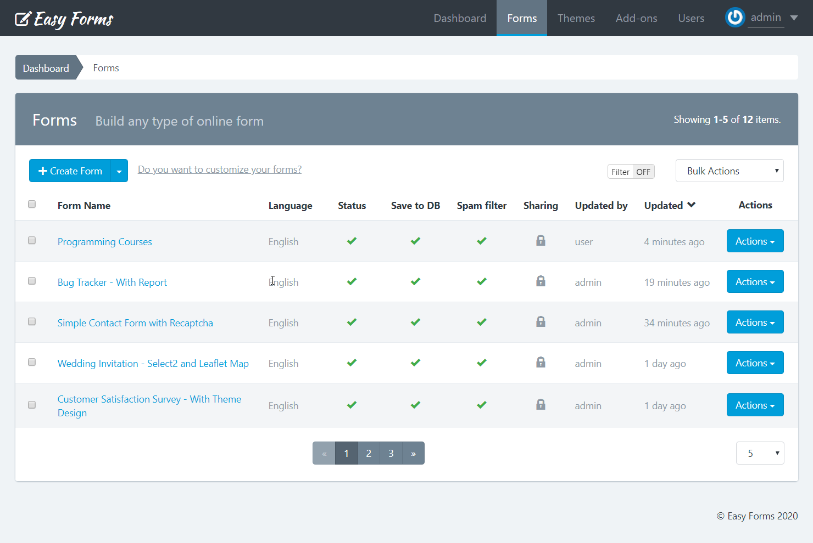
Note: To access the Form Manager click the "Forms" menu in the navigation bar.
Create a form ¶
Before you create your first form, please read the Form Builder documentation.
If you are on the Dashboard or in the Form Manager, follow these steps:
- Click "Create Form"
- Drag and drop all the fields that your form needs.
- Drag and drop one button or more, according to your needs.
- Click "Save Form". A modal window will appear with 3 options:
- Continue editing the form.
- Go to Advanced Form Settings
- Go to Form Manager
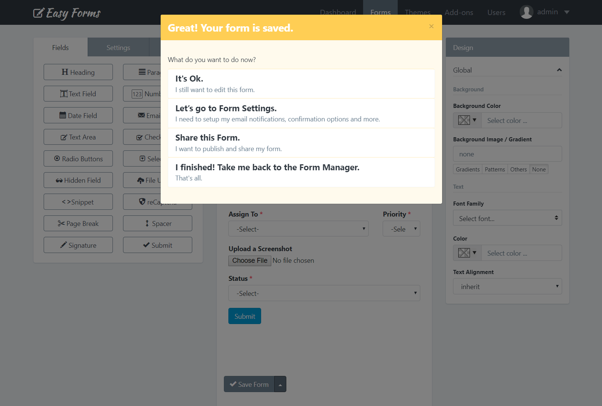
Note: If you close the modal window without choosing one of these three options, when you "Save" again, you create another form and not edit the already created. This option can be useful if you want to create several similar forms quickly.
View Form Record ¶
To view the Form Record, click on the form name in the Form Manager. You can view from here its configuration and access all your options.
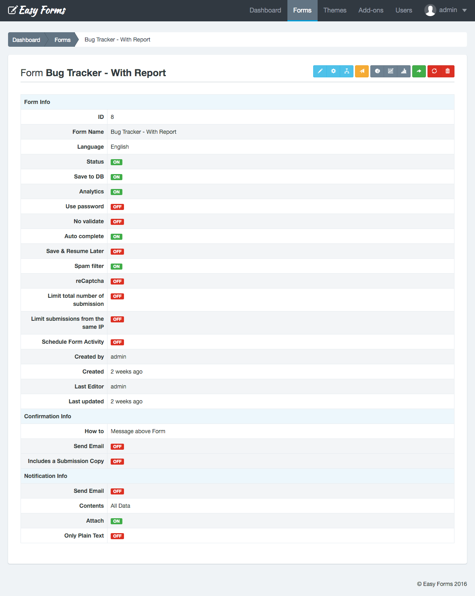
Update a Form ¶
If you have questions about updating your first form, please read the Form Builder documentation.
Updating a form can be done in two ways:
- From the Form Manager
- Locate the form to update
- Click on the "Actions" button and select "Update"
- From the Form Record
- To access the Form Record click the name of the form
- Then click the "Update" button (the pencil icon)
- Drag and drop one button or more, according to your needs.
- Click "Save Form".
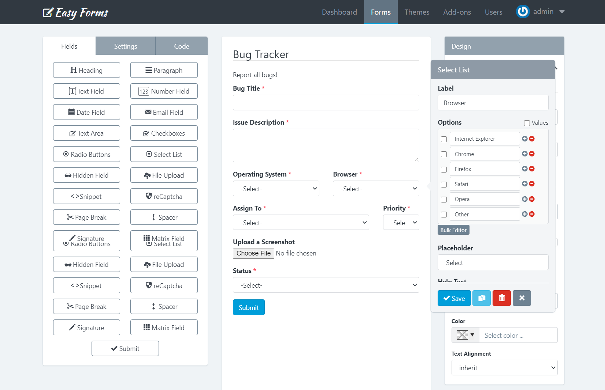
Note: While you can update a form at any time, the information gathered by them (submissions and reports) may be affected or lose coherence.
Save Form as Template ¶
To save your Form as a Template, follow these steps:
- Go to the Form Builder
- Click the Up Arrow (At the right side of the "Save" button)
- Click "Save Form As Template"
- Then you will be redirected to the Template Manager.
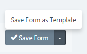
Advanced Form Settings ¶
To access the Form Settings, you must be in the Form Manager. Then perform the following steps:
- Click on the name of the form you want to set
- Click on "Settings" (the gear icon)
In Settings, you will see 4 tabs. Each of these tabs contains the setting of a form aspect:
1. Form Settings ¶
It is the first tab of the Form Settings and is displayed by default. From here you can set up:
- Form Name: Displayed on the application administration pages and as the title of the form public page.
- Status: Indicates if the form is being shown. If set to Off, the form is no longer displayed to the user and instead appears a message indicating that the form is disabled and does not accept more submissions.
- Created by: Field available only for administrator users. Used to assign a form to a different advanced user.
- Language: This language will be used to display form messages. For example, validation errors. Note that you can add another language to the application.
- Text Direction: Allows you to set the direction in which the values appear in the form. By default, the text direction is Left to Right (LTR). But, you can change the text direction from Right to Left (RTL) from the dropdown.
- Private: Only logged-in users with the right permissions can access the Form page or Form Widget. If this option is enable, anonymous users will be redirected to the login page and users without permissions will be redirected to the Form Management page.
- Message: Sets the message to be displayed to the user when the form has been disabled (Off).
- Shared With: This feature allows you to share the form with other users. You have three options:
- None: The form will only be visible by its creator (without considering the administrator who can see all the forms).
- Everyone: The form will be visible by all users of the application. Only managers can share forms with everyone.
- Specific users: Allows you to select the users who will be able to see the form. Related permissions: Includes the word "Shared" in his name. For example, viewSharedForms, editSharedForms, deleteSharedForms.
Important! Keep in mind that although a user can share a form with another user, this user must have the permissions to view, edit, delete, etc. required for each action. For example, if you share the form with two users with different roles: Manager and Editor. The Manager user could only have access to view the reports and statistics of shared forms, while the Editor user could only have access to the Form Builder and Form Settings of shared forms.
- Generate Submission Number: This option allows you to set a custom sequential submission numbering for your form. The submission number will be increased by 1 always. Except, if you set a bigger number in form settings (In this case, we are going to use this number). So, only when the number is bigger than the submission number of the previous entry we are going to use it to prevent duplicates. Take into consideration that the Submission Number helps you to identify a Submission in your Form, but a Submission ID helps you to find a Submission in the entire application. Two different forms can have the same Submission Number, but never the same Submission ID.
- Number Width: Set the minimum width of number without a prefix (zeros will be added to the left side). This will change the minimum width of the submission number for new submissions. E.g. set to 5 to have submission number displayed as 00001 instead of 1. Leave empty to disable.
- Number Prefix: Prefix before submission number (optional). This will change the prefixes for new numbers.
- Number Suffix: Suffix after submission number (optional). This will change the suffixes for new numbers.
- Save DB: Indicates if form submissions must be stored in the database or not. In any case, this does not affect each emailing entry.
- Owner Scope: When this option is active, only the Form Managers can manage all the Submissions. The rest of the users who have access to the Submission Manager, will only be able to manage their own submissions.
- Protected Files: When this option is active, only Logged-In users with Form access can access or download the files.
- Editable: When this option is active, form submissions can be edited by anonymous users by using the Form Widget. So, you will be able to allow your users edit form entries from your own website.
- During: It must be a number, for example: 1. This number defines the amount of time a user can edit a submission.
- Unit of Time: It can be Hours, Days, Weeks, Months or Years. This allows you to define exactly the time you can allow the edition. Eg. 1 hour or 1 day.
- If the Submission meets: Only Form Submissions that pass this condition can be edited. This allows us to enable/disable the edition depending on the value of form fields.
- Limit total number of submission: Specify the maximum number of submissions that the form will accept in a period.
- Total Number: Total number of submissions to be accepted.
- Per Time Period: Period in which the number of submission will be counted.
- Limit submissions per User: Sets the maximum number of submissions that the Form can receive from the same user in a period.
- Limit By: There are four options: IP Address, Browser Fingerprint, IP Address or Browser Fingerprint and IP Address and Browser Fingerprint. Use Browser Fingerprint when you disable IP Tracking or when you are running Easy Forms in an intranet and want to limit the entries.
- Max Number: Maximum number of submissions allowed.
- Per Time Period: Period in which the number of submissions will be counted.
- Schedule Form Activity: Set the start an end date in which the Form must be enabled (ON) Before and after it, the form will be automatically disabled.
- Start Date: Select the date on which the form will be activated.
- End Date: Select the date on which the form will be deactivated.
- Use password: Enable or disable the form protection by using password. If the option has been enabled, you should fill the Password field. Otherwise, the form will not be saved and instead, a validation error will be displayed. By default, this setting is OFF.
- Spam filter: Indicates if the form should use the honeypot technique to filter submissions made by real users from the ones made by bots (spam).
- Authorized URLs: To prevent a third party from embedding your Form on their own website, your form can be restricted to a list of URLs that you authorize.
- No validate: This option allows you to disable the Client-Side validation (by the browser). Take into account that the Server-Side validation won't be disabled. It's recommended to have this option in Off.
- IP Tracking: When this option has been enabled, IP addresses won't be collected by the application. You can enable the Browser Geo-location to collect the Sender information with consent.
- Analytics: Enable/disable monitoring the form by the application. When, IP Tracking has been disabled, Form Stats will be collected with IP anonymization.
- Autocomplete: Enables the browser's autocomplete to forms that have been previously filled. By default, this setting is ON.
- Save & Resume later: When this option has been enabled, the browser automatically will store the information entered by a user on each field to be resumed later, even if the user close the browser.
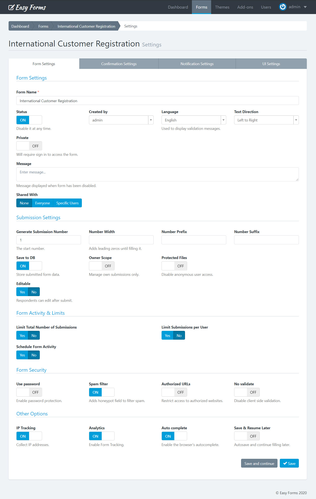
Note: There are conditionally required fields. For example, if you activate the Schedule Form Activity option, you must enter a Start and End Date. If you leave these fields in blank, you cannot save the Form Settings and instead, an error message appears.
2. Confirmation Settings ¶
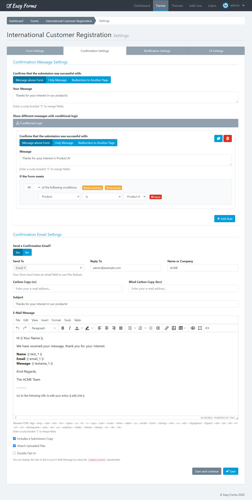
This tab allows you to configure four key aspects of the submission confirmation:
- Inform to the user immediately: Whether using a text message (alone or above the form) or redirect the user to another web page. In the first case, you must type the message to display and in the second, the full URL of the web.
- If you'd like to make the message more personal, you can insert field variables (placeholders) into a confirmation message or confirmation URL, in similar way as a confirmation message by email. Once the form has been submitted, the placeholder will be replaced with the information placed in that field. For more details, go to the 'Customizing the message' documentation.
- To Redirect the browser to another page, you can set up 3 additional parameters
- Show Message and Redirect After: Here you can enter a number of seconds to start the redirection.
- Append Submission Data to URL: This is useful for small forms when you want to append all the collected data to the URL. Eg. https://www.example.com/thanks.html?text_0=John&email_0=john@doe.com
- Replace Field Name with Field Alias when it's available: If this option has been enabled, the collected data will be appended using the Field Alias. Eg. https://www.example.com/thanks.html?name=John&email=john@doe.com
- Conditional Logic With this tool you can customize the way that you handle and process your submissions, giving you more control once a user has submitted your form. A common example of this would be if you wanted to provide your end users the option to download a file. In this scenario you can redirect to the file to start the download process. But, if the user don't want to get the file, we will show the Thank You message.
- Send confirmation email to the user: If you select this option, each time a user submit a form will receive an email that will thank him.
- Double Opt-In You can enable the double opt-in feature to confirm your form submission. Then you can use the placeholder:
{{optin_link}}to present the link to the Opt-In Confirmation Page. When the end-user clicks this link can be redirected to another web page or see a custom Thank You message.
Note: When the end-user confirms their Opt-In, the following event will be triggered: Email has been verified by double opt-in. This event can be used in different parts of the system, for instance to send email notifications.
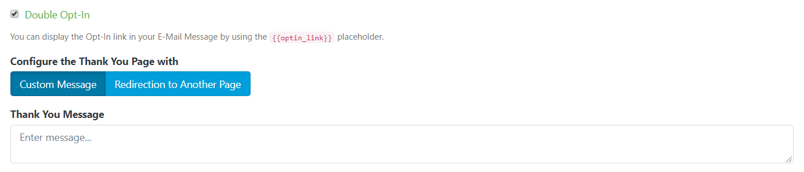
3. Notification Settings ¶
In this tab you can configure how Form Submissions will be sent to your email (All data, only a link to the data or a custom message). Additionally, you can set the email subject, email addresses and more.
Four things to keep in mind:
- If the form has fields of "Email" type, you can select them as Send To and/or Reply To email address.
- If the form has fields of "File" type, you can attach uploaded files to emails.
- If you choose only Plain Text, a default message with all the submitted data will be sent in plain text.
You can choose the event when the email notification will be sent:
- Whe the form is submitted
- When the email is verified by double opt-in
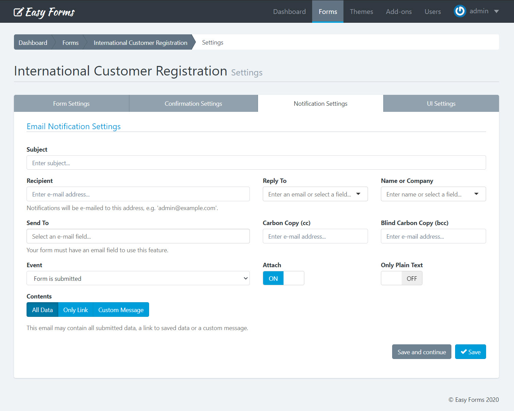
Note: You can insert placeholders (field variables) into a notification email. For more details, go to the 'Confirmation Settings' documentation.
4. UI Settings ¶
UI = User Interface.
From here you can modify the form appearance: The design by using themes, and the functionality by using an external JavaScript file.
- Select a theme: You can select the theme that best fits your form or one you have created yourself. When you select a theme from the list, the form will be automatically displayed with the design chosen theme. You can change the themes over and over again to see differences.
- Load Javascript File: Enter the full URL of the JavaScript file that will be loaded with your form. By default, the jQuery library is available for you to make use of it when interacting with the form.
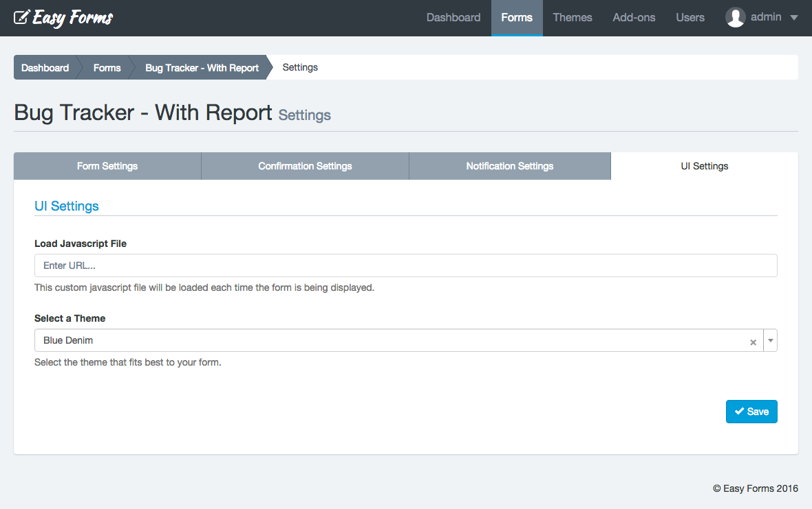
Note: To save all the changes you make on any tab, click the "Save" button.
Reset Stats ¶
You can reset the form stats from the Form Manager, by clicking the "Actions" button and “Reset Stats“. Then it will show a popup asking you to confirm your decision to delete the stats.
Delete a form ¶
You can delete a form from the Form Manager, by clicking the "Actions" button and "Delete". Then it will show a popup asking you to confirm your decision to delete the form.

Important! When you delete a Form, all content related to it will be deleted too, including: Submissions, reports and graphs, statistics, configurations and more: This action cannot be undone.
Add conditional logic to a form ¶
Easy Forms features a powerful and intuitive tool to add conditional logic to a form.
The rules are based on the information that the form fields have at any given time and allow you to disable or enable and show or hide fields and other elements in the DOM. In addition, you can also do math and skip pages with this powerful tool.
You can access the Rule Builder from the Form Manager:
- In the navigation bar, click "Forms"
- Click on the form name
- Click on the button "Conditional Rules" (Flow Graph icon)
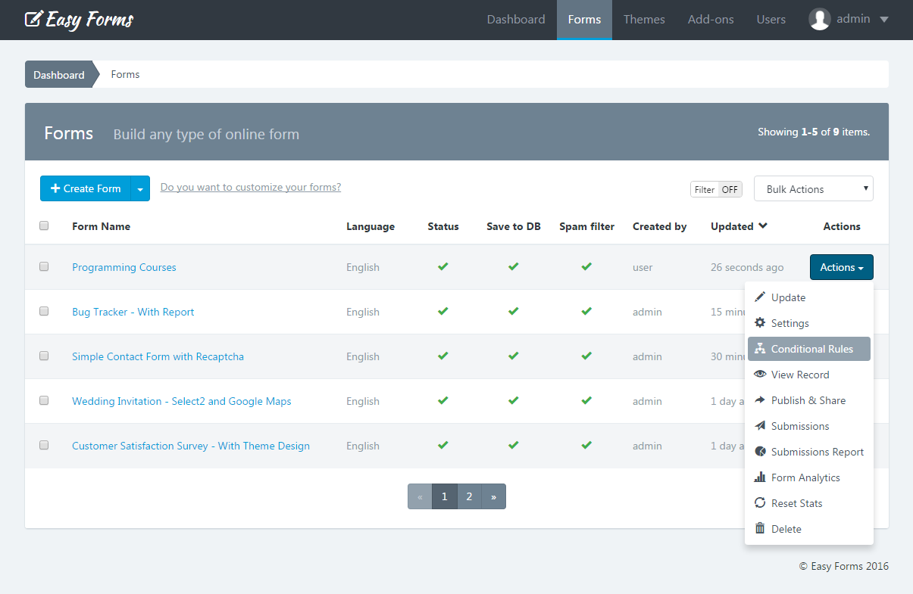
Note: If you have questions about your first conditional rule, please read the Rule Builder documentation.
Publish and Share a Form ¶
You can access to publish and share a form using the Form Manager:
- In the navigation bar, click "Forms"
- Click on the form name you want to share
- Click on the "Publish and Share" button (the green arrow icon)
- This allows you to get the code to be placed on the website which will display the form (inline or in a modal pop-up). You can also copy the form permanent link and share it via email or social networks. And now, with the 1.1 version you can also share links with friendly URLs to your forms, immediately!
Note: Keep in mind that if you are going to share your form with a friendly URL, you must also update your theme background-image (if using one).
In addition, the forms can be published in two formats: With or Without design (no theme) and can be shared in different ways, depending on the configuration you assigned. For example, you can share the Form in complete page and without the application logo.
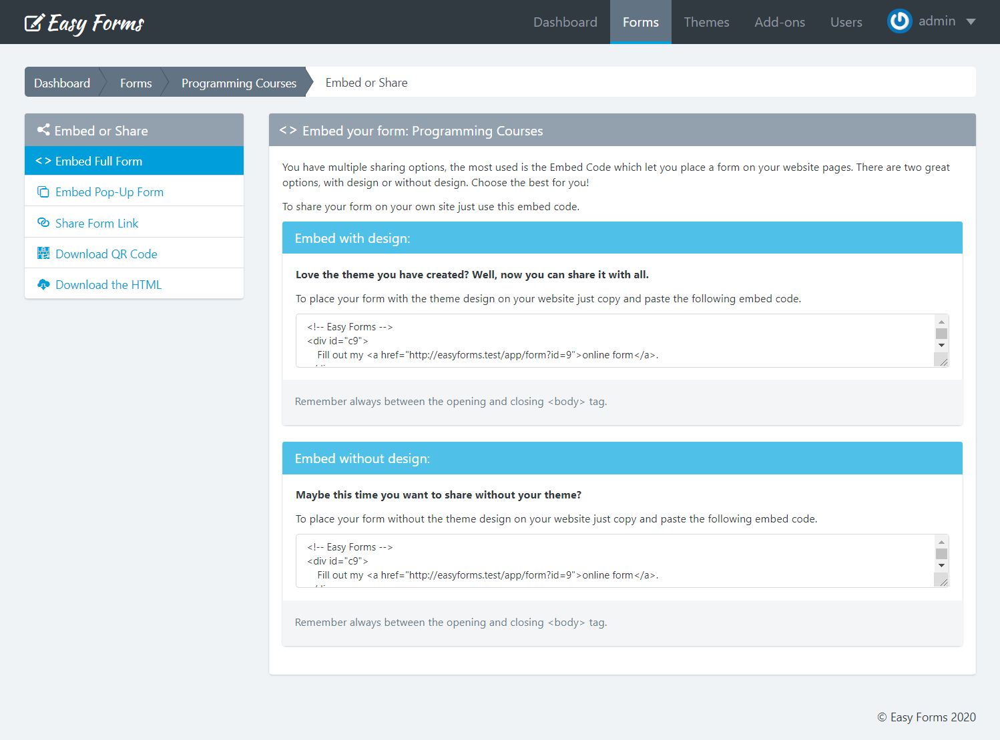
PopUp Designer: Place the form inside a popup ¶
You can place the form inside a popup and design the look and feel of this popup without writing a single line of code.
To use the PopUp Designer, follow the next steps:
- In the navigation bar, click "Forms"
- Click on the form name you want to share
- Click on the "Publish and Share" button (the green arrow icon)
- Click on the "Embed Pop-Up Form" menu.
In this page you can create popups that will get your visitors attention.
You can customize a lot of options like colors, borders, radius, backgrounds, button placements and many more.
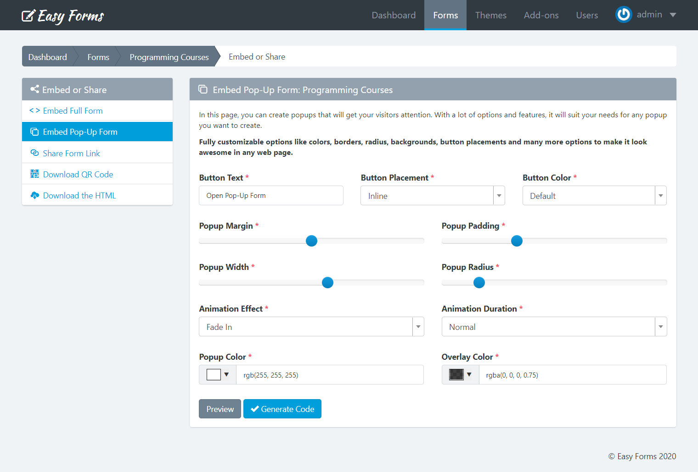
To finish, click on the "Generate code" button to open a modal and copy the HTML code that you must insert in your web page.
Download QR Code ¶
QR Codes are an excellent way to connect people from print media or invite people in a mobile world to complete your form.
To download the QR code, follow the next steps:
- In the navigation bar, click "Forms"
- Click on the form name you want to share
- Click on the "Publish and Share" button (the green arrow icon)
- Click on the "Download QR Code" menu.
In this page you can see the QR Code to the friendly link of your Form. Also, you can click the "Download" button to share it with your users.
Form's Backend Endpoint / Download the HTML ¶
Easy Forms has the ability to generate endpoints, then you can use them to make fully customizable forms.
You can download the HTML code of your Form to integrate it directly on your webpage or mobile app, and use the form's backend endpoint to collect data.
To download the HTML code, follow the next steps:
- In the navigation bar, click "Forms"
- Click on the form name you want to share
- Click on the "Publish and Share" button (the green arrow icon)
- Click on the "Download the HTML" menu.
In this page you can see the button to download the HTML code as a ZIp file. Also, you can copy the Form Endpoint directly.
Note: If you want to replace the "name" attribute of each field, you need to set it as a Field Alias in the Form Builder.
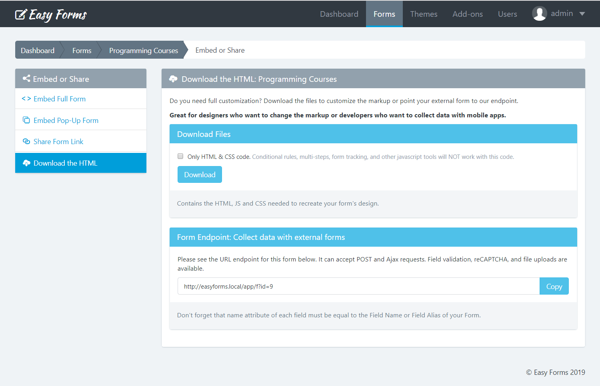
Apply a theme to the form ¶
To apply the theme you have created to a form, go to the Form Manager. Then, perform the following steps:
- Click the "Actions" button of the form in which you are going to apply the theme
- Click "Settings"
- Click the "UI Settings" tab
- Select a theme from the menu
- Click "Save"
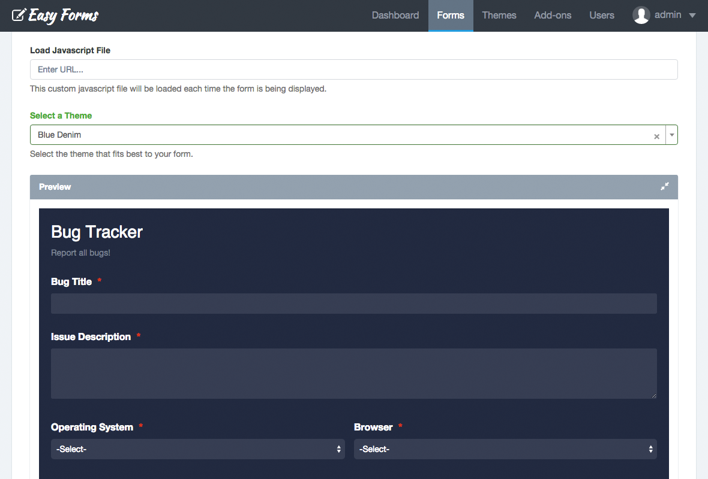